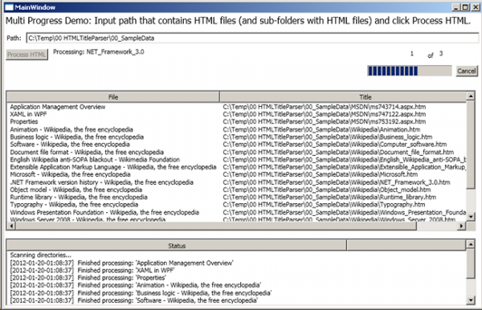
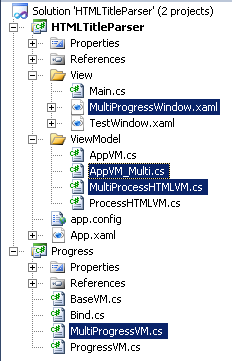

Introduction
Managing asynchronous tasks and connecting them with a responsive GUI has been a challenge of the past. The arrival of multi-core processors
and the Parallel Task library in C# have given us something to improve algorithms towards speed and efficiency. The Async CTP and C# 5.0 are still
not in production and it is therefore a worthwhile journey to find a stable ProgressViewModel that can be applied in C# 4.0. I developed this ViewModel
in another CodeProject article called A reusable ProgressViewModel to observe progress with MVVM.
This article takes the previously shown design and extends it, such that multiple progresses can be managed within this pattern.
StyleCop
I use StyleCop in my projects to make the code readable in a uniform way. So, if you should get an error when compiling the project, you can either download and install StyleCop, or edit/remove
the corresponding entries in each .csproj file:
<Import Project="$(ProgramFiles)\MSBuild\StyleCop\v4.5\StyleCop.Targets" />
Background
I am developing an application where a batch like processing is required. N items are selected and each item is processed (in sequence) in an asynchronously executing thread.
To simulate this situation, I have extended the demo application such that not only HTML files in a given directory are parsed but also all HTML files in all sub-directories below
the Path directory.

The progress section has two progress indicators. The n of m label and the progress bar on the right-top side of the MainWindow.
The former indicates the directories parsed with the total number of directories, while the latter progress bar indicates (as before) the progress of parsing HTML files in any given directory.
Download the attached SampleData if you do not have a directory with HTML files and sub-directories with more HTML files on your system. Click on the expander
in the lower part of the first MainWinidow, point the application to the uncompressed folder, and click the Process HTML button to get some processing going.
Using the Code
The extension of the ProgressViewModel discussed here is (in a nutshell) in the MultiProgressVM class where I replaced the simple properties:
ProgressMinProgressMaxProgressValue, andIsProgressVisible
with arrays:
ProgressMin[]ProgressMax[]ProgressValue[], andIsProgressVisible[]
The class constructor accepts an int number which controls the size of these arrays (default is one). The View can then implement multiple progress indicators
by binding to an item in each array of properties. I wanted to keep this extension separate from the first approach because I wanted to make sure that we can see
the differences afterwards and I would still like to use the approach from the first ProgressViewModel article.
|  |
A project overview with the Visual Studio 2010 Solution Explorer shows that I added the selected classes in comparison to the previously posted
article on the ProgressViewModel.
I added one more class for each object in each layer (except for the View and Result class). This shows, one more time, the layered nature of the architecture used here.
The binding in the View is changed from:
IsProgressVisible to IsProgressVisible[index]
to indicate the corresponding item in the array.
A similar change can be seen in the code-behind of the ProcessHTMLDirectory method in the MultiProcessHTML class. Here, a statement, such as:
this.ProgressMax = files.Length;
is replaced with:
this.SetMaxValue(1, files.Length);
to let the bound UI know that these values have indeed changed. |
The ProcessHTMLDirectory method in the MultiProcessHTML class iterates through an inner and outer loop. The inner loop goes through each file
in a given directory while the outer loop iterates on each directory within the given directory.
There is really not much more to say about this, other than highlighting the above differences and noting that the ProgressViewModel is now managing two
progress indicators, where it used to have one. Please make sure that you have read my first article on the ProgressViewModel if you find the above explanation rather too short.
Points of Interest
I was not sure whether arrays can actually be bound to UI elements. The short answer is yes, but we can no longer update values through a CLR property,
since C# does not support named indexers, and we are required to execute OnPropertyChanged() when a value changes. So, implementing a separate method
per arrayed property and setting the setter of each arrayed property to private has done the trick in my case (and I thought that implementing a separate class
with an indexer is besides the point and not worth the effort).
Seeing the new n of m progress indicator makes me wonder about estimation progress indicators of the type: Remaining time: x minutes.
One simple way to do this would be to log the time it takes to execute one inner loop and simply multiply the result with the number of inner loops left.
This would work well if each loop requires (on average) the same amount of progressing.
It would not work good if the effort required for processing varies greatly from inner loop to loop. Obviously, getting reliable estimates is a separate issue in that case.
Maybe this is a topic for an article three in this series...
Please take a moment of your time to give me your feedback as a vote and comment.
History
- 20 January 2012: First version.